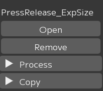
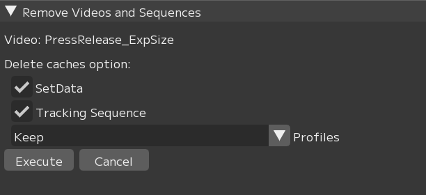
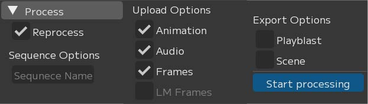
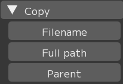
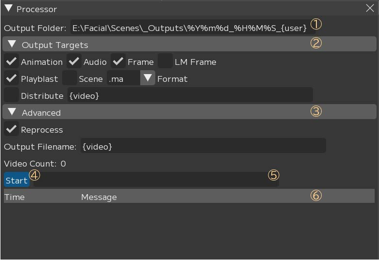
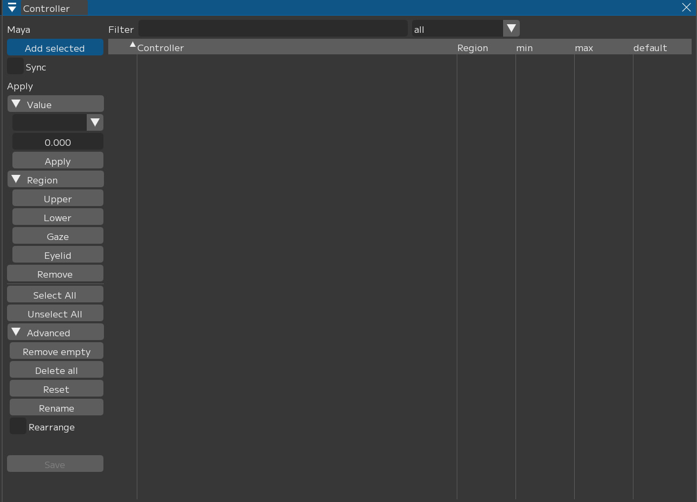
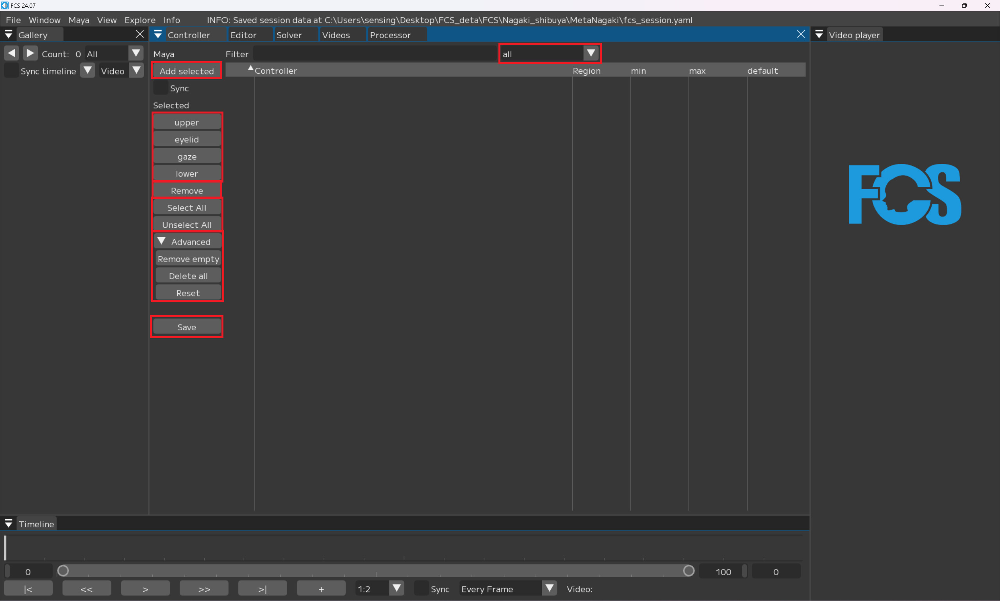
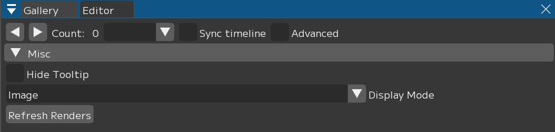
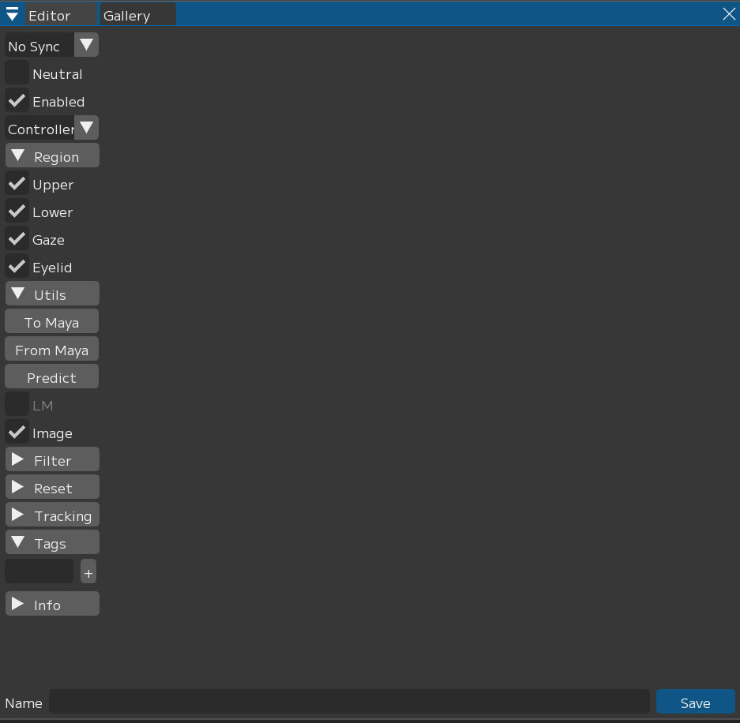
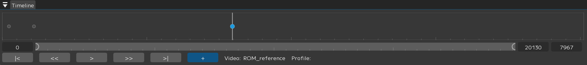

Window
FCS内の各UI・ウィンドウを表示できます、ここでは各ウィンドウの説明を行います。
{kind=link}
テキストテキスト
テキストテキスト
テキストテキスト
テキストテキスト
テキストテキスト
テキストテキスト
テキストテキスト
テキストテキスト
テキストテキスト
① Filter入力欄
動画名を文字列でフィルターします。
② Importボタン
ダイアログを開いて新しい動画をインポートします。シフトキーで複数選択が可能です。
③ Video表見出し
右クリックメニューから表示する内容を変更することができます。
④ 選択ON/OFF
バッチ処理の対象にするかどうか切り替えます。
⑤ 動画名
動画名を右クリックでメニューが表示されます。
メニューから単体のアニメーション出力などを行うことができます。
⑥ 選択ON/OFF(全)
Videosウィンドウのすべての動画に対して選択のON/OFFを切り替えます。
⑦ Removeボタン
Remove Videos and Sequencesウィンドウを表示します。
Videos 右クリックメニュー

- 動画名
- Remove
「Remove Videos and Sequence」ウィンドウを表示します。
Videos 右クリックメニュー
|
Remove Videos and Sequencesウィンドウ
{kind=link}

オプションを指定して動画をFCSから削除します。
Video
動画名Delete caches option
キャッシュデータについて☑ SetData
セットデータ内のファイル（音声・静止画連番）も削除するかどうか☑ Tracking Sequence
動画のトラッキングデータも削除するかどうかProfiles
削除対象の動画から追加したプロファイルについてプルダウンメニュー
Keep
プロファイルはそのまま維持しますKeep but unlink
プロファイルは維持しますが、動画との関連付けは削除します
（プロファイルの動画名がUnkownになります）Delete
すべて削除します
Execute
実行Cancel
キャンセル
Note
動画の尺変更などが原因で同じ名前の違う内容の動画を読み込みたいとき、 Keep＞再読み込みとするとピックアップしたフレーム位置にずれが発生し想定していないアニメーション結果になる場合があります。 適宜DeleteやKeep but unlinkで以前の動画との連携を解除してください。
Process
{kind=link}

☑ Reprocess
キャッシュが既に存在する場合も一から解析しますSequence Options
Sequence Name
シーケンスの名前を設定しますUpload Options
☑ Animation
アニメーションデータを出力します☑ Audio
音声データをMayaに読み込みます☑ Frames
動画の連番画像を出力、Mayaのイメージプレーンに読み込みます☑ LM Frames
ランドマーク付の連番画像を生成、Mayaのイメージプレーンに読み込みます
（+パイプラインでは使用不可）
Export Options
☑ Playblast
プレイブラストをmov形式の動画で出力、保存します☑ Scene
Mayaシーンを出力、保存しますStart processing
上記の設定で処理を実行します
Copy
{kind=link}

Filename
動画のファイル名をクリップボードにコピーしますFull path
動画のフルパスをクリップボードにコピーしますParent
動画の親ディレクトリのパスをクリップボードにコピーします
Processor
Processerウィンドウが開きます。Processerウィンドウでは複数の動画を一括で処理するバッチ機能が使用できます。 VideosウィンドウでチェックボックスがONになっている動画が処理の対象になります。
{kind=link}

① Output Folder
出力先を指定します
② Output Targets
出力する内容を指定します
☑ Animation
アニメーションデータを出力する☑ Audio
音声データをMayaに読み込む☑ Frames
動画の連番画像を出力、Mayaのイメージプレーンに読み込む☑ Landmark Frames
ランドマーク付の連番画像を生成、Mayaのイメージプレーンに読み込む
（+パイプラインでは使用不可）☑ Playblast
プレイブラストをmov形式の動画で出力、保存する☑ Scene
Mayaシーンを保存するFormat
出力するMayaの保存形式(.mb / .ma)☑ Distribute
③ Advanced
☑ Reprocess
キャッシュが既に存在する場合も一から解析するOutput Filename
出力されるデータ名
④ Start
アニメーションの出力を開始する
⑤ プログレスバー
処理状況の表示をします
⑥ Log
処理状況のログが表示されます
フォルダ名・動画名を指定するパラメータについて
{solver}
solverの名前{video}
ビデオのファイル名{user}
windowsユーザ名{project}
案件フォルダ名{chara}
キャラクター名{actor}
役者名{%Y%m%d}
年 月 日{%H%M%S}
時間 分 秒
Controller
コントローラーの登録を行うためのウィンドウです。{kind=link}

Controllerウィンドウ
Filter
入力したコントローラー名でコントローラー表にフィルターをかけます。all▼
all / null / upper / lower / gaze / eyelid
指定した項目（Region）を絞り込んで表示します。
save
コントローラー設定を登録・保存します。Maya
Add selected
選択したコントローラーを登録します。☑ Sync
表の数値の操作をMayaと同期させます。
▼Value
▼Min / Max / Default
☑ を入れたコントローラーのどの値に対しての処理か指定します。0.000
入力する数値Apply
実行ボタン
▼Region
Upper / Lower / Gaze / Eyelid
☑ を入れたコントローラーのRegionを設定します。Remove
☑ を入れたコントローラーを表から削除します。Select All/Unselect All
controller上に表示されているコントローラーすべての ☑ / □ を切り替えます。
▼Advanced
Remove empty
Regionが登録されていないコントローラー(null)を表から削除します。Delete all
登録したコントローラー情報をすべて削除します。Reset
以前Saveした際のデータの状態に戻します。Rearrange
コントローラー表の順番をドラッグ＆ドロップで変更できるようにします。
Note
プルダウンメニューについて：
Region名 … 現在登録しているRegionのコントローラーが表示されます。 プルダウンがRegionの状態でAdd Selectedを押すと、コントローラーをそのRegionに設定された状態で読み込むことができます。
all … すべてのRegionのコントローラーが表示されます。 allの状態でコントローラーを読み込むとRegionにはnull(リージョン未設定)が設定されます。
null … リージョンが設定されていないコントローラーが表示されます。 コントローラー表に一つでもnullがあると登録したコントローラーを保存できないため、 Save前にリージョンがnullになっているコントローラーがないか確認してください。
Note
最大値最小値は自動で入力されますが、値があまりにも大きすぎる場合は調整を行って下さい。
Warning
数値ではない(True/False)アトリビュートがあると正常に動作しないため、登録から除外してください。
{kind=link}

一覧
all▼：all/Upper/Eyelid/Gaze/Lower/null 指定した項目（部位の区分）を絞り込んで表示
Maya
Add selected：選択したコントローラーを登録
Sync：☑ 数値操作をMayaと連動する
Selected
Upper/Eyelid/Gaze/Lower：Region 部位の区分ごとにコントローラーを登録
Remove：☑ を入れたコントローラーを削除する
select All/Unselect All：controller上に表示されているコントローラーすべてに ☑ / ☑ 解除
▼Advanced
Remove empty：Regionが登録されていないコントローラー(null)を削除する
Delete all：追加 - 登録したコントローラー情報をすべて削除する
Reset：Saveされているデータの状態に戻す
save：controller Infoを登録。
Profiles
{kind=link}

Gallery
Count
現在表示されているプロファイル数を表示します。[ ]▼
Enabled
Enabled状態のプロファイルを表示します。Disabled
Disabled状態のプロファイルを表示します。Default
数値未設定含む、すべてのRegionがデフォルトの値のプロファイルを表示します。Not Default
デフォルトの値ではないプロファイルを表示します。Neutral
ニュートラルのプロファイルを表示します。No Tags
タグのついていないプロファイルを表示します。[Region名] Enabled
そのRegionに値が登録されているプロファイルを表示します。
Sync timeline
選択したプロファイルが含まれる動画を開いている場合、そのプロファイルのフレームに移動します。Adbanced
詳細機能を表示します。
Misc
Hide Tooltip
□
登録されているRegionの図の表示 / 非表示を切り替えます。
Display Mode
Image
プロファイルをアクターの写真で表示します。Render
プロファイルをキャラクターモデルのスクリーンショットで表示します。
Refresh Renders
Display Mode＞Render表示用にスクリーンショットを現在のMayaの設定で再出力します。
Editor
プロファイルを登録するウィンドウです。
画像に対応する表情をMayaで作成し、FCSに読み込みます。
{kind=link}

Editorウィンドウ
No Sync▼
数値の操作をMayaと同期させるかどうかの設定です。To Maya
FCSのスライダー上でのプロファイルの数値変更をMayaに転送します。From Maya
saveボタンを押す際にMaya上での表情データを取得しFCSに反映させてから登録します。Both
「To Maya」と「From Maya」をどちらも行い、FCSとMayaを双方向で同期させます。No Sync
FCSとMayaを同期させません。
Neutral
Neutral表情かどうかを設定します。Enabled
このプロファイルを表情推定の計算に含めるかどうか設定します。Controller▼
プロファイル画像右のスライダー表記を切り替えます。controller
スライダーにコントローラー名を表示します。Value
スライダーに値を表示します。
Name
プロファイル名を表示します。任意の名前に変更することも可能です。save
現在の設定でプロファイルを登録・保存します。
Note
コントローラーウィンドウ右部のスライダーはCtrl＋クリックで直接数値を入力することが可能です。
Timelineの画面説明
{kind=link}

Timeline：バーを左右に動かし、ビデオを手動で再生させる
[0][20130]：ビデオの縮尺を変更できる。
[7967]：現在のフレーム数
|< >|：1フレーム前/後に移動する
<< >>：登録したprofileにジャンプする
＞ ||：動画の再生 - 停止（再生すると一時停止ボタンが表示される）
Video：Video playerに表示されている動画名
Editorの画面説明

Sync:
To Maya：登録されているprofile情報をMayaに転送する
From Maya at save：saveする際にMaya上での調整データを取得しFCSに反映する
Both：FCSとMayaを双方向で連動させる
No Sync：FCSとMayaを連動させない
Note
本ページではProfileの追加手順 - 編集手順について記載しております
Mayaをベースに表情を調整するのか、FCSをベースに表情を調整するのかは任意で使い分けることができますが、
最初は「Both」での使用をオススメします。
Neutral：デフォルトの表情として必ず1つ登録する
Enabled：解析する素材として使用する
Controller▼
Controller：コントローラー表示が名前になる
Value：コントローラー表示が数字になる
▼Region
Upper/Eyelid/Gaze/Lower：調整した情報を登録する
▼Utils
To Maya：FCS上で操作した値をMayaへ送る
From Maya：Mayaで操作した値をFCSへ送る
Predict：画像から表情を解析し、Mayaの3Dモデルに反映する機能
LM：LandMarkを表示する
▼Filter
▼all/Upper/Eyelid/Gaze/Lower：選択した項目でコントローラーを絞り込む
[ ]：入力した文字でコントローラーを絞り込む
▼Reset：入力した情報を削除する
Name：Profileとして登録する名前
Save：変更した情報を保存する
画像部分：Timelineから+で追加した画像が表示される
コントローラー：Controller Infoで登録したコントローラーが表示される
Galleryの画面説明

作成したProfileが表示されるウィンドウ
←→：1列に表示するprofileの数を変更する。◀を押すと少なく、→を押すと多くなる。最小3、最大10。 Count:○○：登録しているprofileの総数
All↓：該当する項目を絞り込む
All：すべてのprofileを表示する
Enabled：解析に使用するprofileを表示する。Enabledに ☑ を入れて登録したprofileが対象となる。
Disabled：解析に使用しないprofileを表示する。Enabledに ☑ を入れずに登録したprofileが対象となる。
Default：数値がdefaultのprofileを表示する。
Not Default：数値がdefaultではないprofileを表示する。
Neutral：Neutralにチェックを入れて登録したprofileを表示する。
（Region）Enabled：該当する（Region）に ☑ を入れて登録したprofileを表示する。
（Region）Disabled：該当する（Region）に ☑ を入れず登録したprofileを表示する。
Sync timeline ☑ ：登録したprofileと同じ動画を開いた状態でprofileを選択すると、該当するフレームにジャンプする。
↑↓：ソートの昇順 降順を変更する
Video▼：ソート機能
Video：profileのName順にソート
Created At：profileを作成した日時で順にソート
Saved At：saveした日時で順にソート
（controller名）：該当する（controller）に登録した数値でソート
ピックアップした画像
緑：「Neutral」に ☑ を入れて登録したProfile
赤：数値がデフォルト状態/未編集のProfile
青：選択中（編集中）のprofile
黒：「Enabled」の ☑ を外し、「Disabled」で登録したprofile
白：リターゲット後、登録したprofile